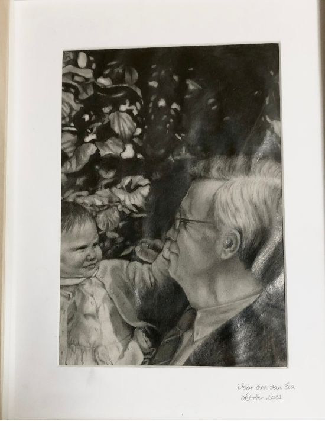
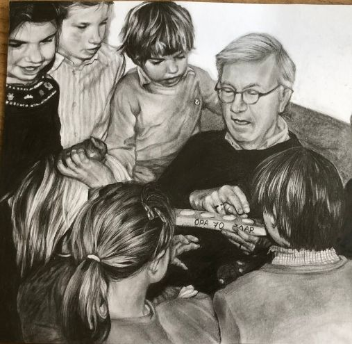
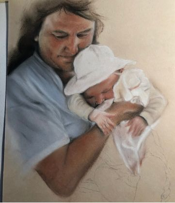
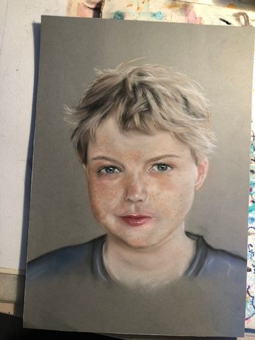

Hic Dames 1 seizoen 23/24
Een portret van het hele team tijdens seizoen 23/24, van keeper tot spits, getekend met kleurpotlood. Ik wilde het team vastleggen zoals het er dat jaar bij stond. De tekening heeft een tijd in het clubhuis gehangen.

Een portret van het hele team tijdens seizoen 23/24, van keeper tot spits, getekend met kleurpotlood. Ik wilde het team vastleggen zoals het er dat jaar bij stond. De tekening heeft een tijd in het clubhuis gehangen.

Getekend met grijs potlood: opa en ik, toen ik nog een baby was. Naar een foto die ik altijd bewaard heb, één van m'n favorieten om te maken.

Al zijn kleinkinderen om hem heen, kijkend hoe opa zijn cadeau uitpakt, dat wilde ik vastleggen. Ik heb de tekening gemaakt terwijl opa in het ziekenhuis lag, in de hoop dat het hem een beetje kracht gaf.

Een portret van oma en mij, gemaakt met pastelkrijt. Ik heb 'm speciaal voor oma getekend, als een klein aandenken aan ons samen.

Een portret van mijn broertje Sake, getekend met een combinatie van pastelkrijt en kleurpotlood. Ik vond het leuk om die twee technieken eens te mengen en zijn sproeten en blik goed vast te leggen.